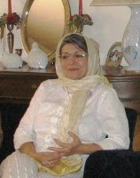

|
|
|
Browsing
Contact Us |
Campaigners |
Face to Face |
Tribune |
Interview |
News |
On the Web |
One Million |
Report
Farsi | Français | German | Italian | Spanish | العربية Also in this section
|
 Communication, an Art I Learned from the CampaignBy: Khadijeh Moghaddam Saturday 18 October 2008 Translated by: Salman Zia-Ebrahimi Starting off With Hard Labor I am packing my suitcase; I have a one month trip ahead of me. I want to have a change of scene and breathe freely for a little while in a different climate. My son is accompanying me on this trip. I can’t make up my mind whether I should take a suitcase or just take a duffel bag; I’m undecided. What if they don’t let me leave? Didn’t they stop many of our comrades from leaving? It would not surprise me if they tried to stop me from leaving and I should plan for such an eventuality; and I do. I put my belongings in a bag. I make room in my son’s suitcase on top of his belongings. This way, if I am on the black list as a person prohibited from leaving the country, my son can take with him the gifts intended for our friends abroad and I can easily take out my personal belongings from his suitcase. I stuff pistachios, baklava, the Campaign pins, Mothers for Peace pins, Feminist School wall calendars and a few books into the suitcase. I also manage to fit a few beautiful Kurdish shawls into the suitcase. These shawls invoke the memories of Ronak and Hana for me. We bought those shawls during our visit to the Sanadaj bazaar with Hana’s brother when we went to Sanadaj to follow up on Ronak and Hana’s situation. With anxiety, we travel the long road to the airport. After having said this to my son several times before, I say again: “Just try to think that you might be going on this trip by yourself. If it all works out, I will be accompanying you, but please don’t let this ruin your trip.” He seems calm on the surface. I keep smiling at my son and my husband, but within me, I am full of anxiety. I am angry and at the same time I feel sorry for us. We are waiting for passport control. I enter the glass cubicle first. I feel like someone with a criminal record who is worried that they might find out about her record and stop her from leaving the country. Why have they created such feelings in us? Why do they try to make us doubt ourselves? Why is this port of exit and entry so terrifying to anyone who intends to leave or enter the country? I tell myself that if they don’t let me leave the country I will go and file a complaint the next day. My worries subside and finally we both clear passport control. After passing the first obstacle, I look at my husband through the glass. Like the smugglers in Iranian movies who wink at each other after successfully accomplishing their mission, I wink at my husband. He probably does not see me, considering the distance. We wave at each other as a sign of success. What success? What a way to start a trip, with hard labor! We board the plane. I still feel shaky inside. What if they take me off the plane and as young people say, it ruins my son’s fun and turns his trip into a nightmare? We are both quiet, appearing calm on the surface. The plane takes off and we let out a sigh of relief. But I still feel uneasy, thinking how low our expectations have become. Cheap Guest! We arrive at my sister’s house. Emotions reach a high point. It seems like I have been endeared more after being released from prison. My sister at whose house I am staying tells me about our other sisters who live in the United States: “Our sisters didn’t want to come to see you this quick. They said that they would come, but had not requested leave time from their jobs at the moment and had not made plane reservations. Plane tickets are very expensive if you don’t make reservations in advance. They wanted to come a bit later. I told them that if a disaster like what happened to Zahra Kazemi and Zahra Bani-Yaghoub had happened to you, they would not hesitate about spending money and getting themselves to Iran immediately, to visit your grave, and now they say they want to come later?” All the sarcasm of my dear host makes me feel dismayed. I protest and say: “Can’t you talk nicer?” Without hesitation, as usual she says laughingly: “I have learned sarcasm from you, my big sister!” My other sisters arrive. I feel bad that I have made them go through so much trouble. Traveling this long distance and all the expenses just for three days? As usual, immediately after kissing and hugging and tears of joy, the suitcases bearing the gifts are opened. My sisters laugh and say: “We have only brought you signatures as gifts, because nothing else makes you happier. And we all laugh. How happy I feel in the company of my beloved ones. As my son says, it had been a long time since we had so much fun. My Fun Times Some of the friends from the women’s movement have found out about my trip to Europe. They constantly email me, ask for my telephone number and then ask me about the Campaign. They ask me about the women’s movement, differences and friendships, June 12th and solidarity and… They all want to, as they say, learn about the facts outside of the sanitized structure of the articles. I am invited to a few meetings. I have a hard time keeping a balance between attending meetings and spending time with the family. I postpone attending meetings and seminars to a later time. I am not quite sure if I want to spend more time with my family, either! I am not in the mood or I may be too cautious… Anyway, I prefer not to go. As far as I know, I am supposed to talk to a group of local Iranians who have no previous familiarity with the Campaign. The Campaign has taught me this art. Sometimes my sister criticizes me by asking me: “Do you even know these people to establish such rapport with them?” And then I explain to her that in Iran we talk to everyone in alleyways and streets, taxis and metro trains, and anywhere else you can think of, even in prisons, to gather signatures. Sitting in coffee shops, drinking coffee and talking about the Campaign is the height of having fun for me. During these unplanned meetings, I meet a young woman who is familiar with the Campaign. We exchange phone numbers. A few days later she calls and asks: “If I arrange a meeting with my friends, would you come to talk about the women’s movement and the Campaign?” And of course I accept willingly. My sister is also invited, but she doesn’t accept the invitation. She tells me that she doesn’t know any of them and does not socialize with them. I jokingly tell her that I do! The Effects of Discriminatory Laws in Iran on Iranians Living abroad: Citizenship and the Requirement for Husband’s permission to Travel This meeting is comprised of 12 young Iranian women who are experts in different fields. Most of them initially came to Germany to study. Later, they got married, had children and ended up staying. Their children go to Farsi classes and they are all friends, but their mothers barely know each other. The Farsi class teacher is also present at this meeting. There are twice as many children as there are mothers. These mischievous children, may God have mercy on them, are acting like little devils and are bringing the house down. They have added a certain childish joy and rowdiness to this gathering. Panthea, our host, is a tall young woman with thick brown hair and a beautiful smiling face. She instructs the children to go upstairs. She asks me to talk about the women’s movement in Iran and the Campaign. She asks me if there is any hope to change the discriminatory laws in Iran. She asks what she can do to help to carry forward the objectives of the Campaign. Two of the people in this gathering know me from the Campaign site. They can’t believe that I am among them now. They are excited and tell others about what’s going on in the Campaign: “A while ago, one of the women involved with the Campaign, whose husband is a doctor, was planning a ceremony for her deceased mother-in-law. Not only did they not allow the poor woman to hold the ceremony, they also arrested her.” I laughed and said: “The poor woman who you are talking about is me, but they did not arrest me at that point; they summoned me.” And the thunder of the laughter of these young women echoes throughout the house…… When I start talking about the discriminatory laws that we have listed in the Campaign pamphlet, they start pouring out their hearts. They talk about the fact that the obstacles that the discriminatory laws create for women inside Iran have serious implications for Iranian women in diaspora as well. More than anything, it has caused uncertainty for mothers. By listening to the concerns of these women, I learn more about the laws regarding citizenship and requiring the permission of the husband to leave the country. One of them says: “My baby’s daddy has gone away; I have no idea where he is. I am doing everything by myself to take care of my baby, but I have to find this man to get his permission to be able to take my baby to Iran. I can go everywhere with my children except to Iran! Is this right? I would like for my children to get to know Iran. I would like for them to not forget their grandmother and grandfather, but I have to wait until they are 18. What good is it then when it’s too late?” Another one says: “My husband is German. We have two daughters. My husband doesn’t care about custody or other such matters, but the Iranian Embassy says that we have to get visas for our children in order for them to be able to travel to Iran. I did get visas for my children once to take them to Iran, but I don’t understand why my children have to get visas to go to Iran. Aren’t they my children? Am I not Iranian? I was even watching Iranian television through satellite once and in this program an expert in law and another person were taking calls from viewers to answer their legal questions. I called and explained my problem. We discussed the problem a little, but did not get anywhere in the end. So, while laughing, he finally told me to ask my husband to become an Iranian citizen so that I would have an easier time.” One of the women who is a social activist and also works with drug addicts, says: “It was time for me to renew my passport, but they said that my husband had to come to give me permission to travel and that they could not renew my passport otherwise. My husband and I have been separated. He has been living with another woman for five years. It is very humiliating for me to go and ask him to come to give me permission to travel. To make a long story short, they told me that I had to have proof of an Islamic divorce. We searched all over Dortmund, but we couldn’t find anyone who was authorized to perform an Islamic divorce. They gave us an address in Cologne and we went there. There was this man there who performed the Islamic divorce for a sum of money and gave us a piece of paper. When I submitted this paper to the authorities at the Iranian Embassy, they accepted it because they knew this man. You know how hard I had to work to get this piece of paper! Folks! In this day and age it is a great shame if a woman has to get her husband’s permission to travel.” Others talk about the kidnapping of children by fathers who take their children to Iran without the knowledge of the mothers. This is a common occurrence which deprives women of any rights. When friends were talking about these things, it occurred to me that I never thought that Iranian women in diaspora would have so many legal problems. I have no solution to their problems except to tell them to contact the lawyers working in the Campaign and ask for advice, and more importantly, help change the laws. I give the Campaign’s educational CD to friends and ask them to copy, distribute and watch it. Somebody turns on her laptop and I open the Campaign site and show it to them. They all jot down the address to the site. I then show them the Campaign’s German site. One of the guests suggests that we should all watch the films together as a group and thus the Dortmund branch of the Campaign is formed. The Difference Between Our Signatures and their Signatures! We are near a large church in Cologne. There is a table set up there and on it lays a thick book of about 3000 pages. All around it are pictures of wounded Palestinian, Lebanese and Israeli children. This is initiated by an anti-war pacifist group. It reminds me of our group (Mothers for Peace) when we gathered in front of the United Nations office in Tehran to demonstrate for the same cause and how the police stopped us. These people here collect signatures on petitions and only one person keeps an eye on the book from a distance. Passers-by stop every now and then and look at the pictures, read the fliers and sign the book. My son says: “I wish we could collect signatures for the Campaign the same way.” We both sigh. I am reminded of how hard it is for us to collect signatures and how precious our collected signatures are. Then I tell him that I hope they don’t take away our souvenirs, signatures in support of the Campaign, which we are taking back with us to Iran upon our arrival at the airport in Iran…… |